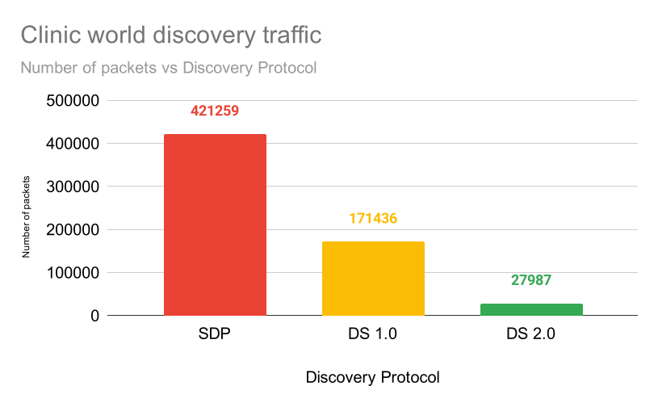

使用Fast DDS Discovery Server作为发现协议[社区贡献] [3111]
**目标：**本教程将展示如何使用**Fast DDS Discovery Server**发现协议来启动ROS 2节点。 [3112]
教程级别： 高级 [16408]
背景 [16410]
从ROS 2 Eloquent Elusor开始，**Fast DDS Discovery Server**协议是一种提供集中式动态发现机制的功能，与DDS默认使用的分布式机制相对。本教程将说明如何使用Fast DDS Discovery Server功能作为发现通信运行一些ROS 2示例。 [3113]
为了获取有关可用发现配置的更多信息，请查看`以下文档<https://fast-dds.docs.eprosima.com/en/v2.1.0/fastdds/discovery/discovery.html>`_或阅读`Fast DDS Discovery Server特定文档<https://fast-dds.docs.eprosima.com/en/v2.1.0/fastdds/discovery/discovery_server.html#discovery-server>`__。 [3114]
Fast DDS Discovery Server 提供了一种客户端-服务器架构，允许节点使用中间服务器互相连接。每个节点都作为一个*发现客户端*，与一个或多个*发现服务器*共享信息，并从中接收发现信息。这减少了与发现相关的网络流量，并且不需要组播功能。 [3118]

这些发现服务器可以是独立的、复制的，或者彼此连接，以在网络上创建冗余并避免单点故障。 [3119]
Fast DDS Discovery Server v2 [3120]
最新的ROS 2 Foxy Fitzroy发布（2020年12月）包括了一个新版本，Fast DDS Discovery Server的第2版。这个版本包括一个新的过滤器功能，进一步减少了发送的发现消息数量。这个版本根据不同节点的主题来决定两个节点是否希望进行通信，或者它们是否可以不匹配（即不互相发现）。下图显示了发现消息数量的减少情况： [3121]
这种架构大大减少了服务器和客户端之间发送的消息数量。下图显示了在“RMF Clinic演示”（<https://github.com/open-rmf/rmf_demos#Clinic-World>）的发现阶段中网络流量的减少： [3122]
为了使用这个功能，可以使用“XML配置参与者”（<https://fast-dds.docs.eprosima.com/en/v2.1.0/fastdds/discovery/discovery_server.html#discovery-server>）来配置发现服务器。还可以使用“fastdds”工具（<https://fast-dds.docs.eprosima.com/en/v2.1.0/fastddscli/cli/cli.html#discovery>）和一个环境变量（<https://fast-dds.docs.eprosima.com/en/v2.1.0/fastdds/env_vars/env_vars.html>）来配置发现服务器，在本教程中采用了这种方法。有关配置发现服务器的更详细说明，请访问“Fast DDS Discovery Server文档”（<https://fast-dds.docs.eprosima.com/en/v2.1.0/fastdds/discovery/discovery_server.html#discovery-server>）。 [3123]
运行本教程 [3126]
talker-listener ROS 2演示创建了一个``talker``节点，它每秒发布一条"hello world"消息，以及一个``listener``节点，它监听这些消息。 [3127]
通过:doc:配置ROS 2环境，您将获得访问CLI工具``fastdds``的权限。该工具提供了访问`discovery工具 <https://fast-dds.docs.eprosima.com/en/v2.1.0/fastddscli/cli/cli.html#discovery>`__的功能，该工具可用于启动一个发现服务器。该服务器将管理连接到它的节点的发现过程。 [3128]
设置发现服务器 [3130]
首先启动一个ID为0、端口为11811（默认端口）且监听所有可用接口的发现服务器。 [3131]
打开一个新的终端并运行： [3132]
fastdds discovery --server-id 0
启动监听节点 [3133]
执行监听器演示，以监听``/chatter``主题。 [3134]
在一个新的终端中，将环境变量``ROS_DISCOVERY_SERVER``设置为发现服务器的位置。（不要忘记在每个新的终端中使用source命令加载ROS 2） [3135]
export ROS_DISCOVERY_SERVER=127.0.0.1:11811
启动监听器节点。使用参数``--remap __node:=listener_discovery_server``来更改节点在本教程中的名称。 [3136]
ros2 run demo_nodes_cpp listener --ros-args --remap __node:=listener_discovery_server
这将创建一个ROS 2节点，该节点将自动为发现服务器创建一个客户端，并连接到之前创建的服务器进行发现，而不是使用组播。 [3137]
启动对话节点 [3138]
打开一个新的终端，并像之前一样设置``ROS_DISCOVERY_SERVER``环境变量，以便节点启动一个发现客户端。 [3139]
export ROS_DISCOVERY_SERVER=127.0.0.1:11811
ros2 run demo_nodes_cpp talker --ros-args --remap __node:=talker_discovery_server
现在您应该看到对话节点发布"hello world"消息，以及监听器接收这些消息。 [3140]
演示发现服务器的执行 [3141]
到目前为止，没有证据表明这个示例和标准的说话者-监听者示例运行方式不同。为了明确证明这一点，在另一个未连接到发现服务器的节点上运行。在新的终端中运行一个新的监听者（默认监听``/chatter``话题），并检查它是否没有连接到已经在运行的说话者。 [3142]
ros2 run demo_nodes_cpp listener --ros-args --remap __node:=simple_listener
新的监听者节点不应该接收到“hello world”消息。 [3143]
为了最终验证一切是否正常运行，可以使用简单的发现协议（默认的DDS分布式发现机制）创建一个新的说话者进行发现。 [3144]
ros2 run demo_nodes_cpp talker --ros-args --remap __node:=simple_talker
现在，你应该看到``simple_listener``节点从``simple_talker``接收到“hello world”消息，但不会接收到来自``talker_discovery_server``的其他消息。 [3145]
高级用例 [3148]
以下部分展示了发现服务器的不同功能，使您能够在网络上构建一个强大的发现服务器。 [3149]
服务器冗余 [3150]
通过使用 fastdds 工具，可以创建多个发现服务器。发现客户端（ROS节点）可以连接到任意数量的服务器。这样可以构建一个冗余网络，即使某些服务器或节点意外关闭也能正常工作。下图显示了一个提供服务器冗余的简单架构。 [3151]
在几个终端中运行以下代码与冗余服务器建立通信。 [3152]
fastdds discovery --server-id 0 --ip-address 127.0.0.1 --port 11811
fastdds discovery --server-id 1 --ip-address 127.0.0.1 --port 11888
--server-id N 表示 ID 为 N 的服务器。在使用 ROS_DISCOVERY_SERVER 引用服务器时，服务器 0 必须排在第一位，服务器 1 排在第二位。 [3153]
export ROS_DISCOVERY_SERVER="127.0.0.1:11811;127.0.0.1:11888"
ros2 run demo_nodes_cpp talker --ros-args --remap __node:=talker
export ROS_DISCOVERY_SERVER="127.0.0.1:11811;127.0.0.1:11888"
ros2 run demo_nodes_cpp listener --ros-args --remap __node:=listener
现在，如果其中一个服务器出现故障，仍然会有可用的发现功能，节点仍然可以相互发现。 [3154]
备份服务器 [3155]
Fast DDS发现服务器允许创建具备备份功能的服务器。这使得服务器能够在关闭情况下恢复到上次保存的状态。 [3156]

在不同的终端中运行以下代码，与备份服务器建立通信。 [3157]
fastdds discovery --server-id 0 --ip-address 127.0.0.1 --port 11811 --backup
export ROS_DISCOVERY_SERVER="127.0.0.1:11811"
ros2 run demo_nodes_cpp talker --ros-args --remap __node:=talker
export ROS_DISCOVERY_SERVER="127.0.0.1:11811"
ros2 run demo_nodes_cpp listener --ros-args --remap __node:=listener
在发现服务器的工作目录中（即启动该服务器的目录），创建了几个备份文件。这两个 SQLite 文件和两个 json 文件包含了启动新服务器和在发生故障时恢复失败服务器状态所需的信息，避免了需要再次进行发现过程，并且不会丢失信息。 [3158]
发现分区 [3159]
与发现服务器的通信可以分割，以在发现信息中创建虚拟分区。这意味着仅当两个端点之间存在共享的发现服务器或一组发现服务器时，它们才会彼此了解。我们将执行一个包含两个独立服务器的示例。下图显示了架构。 [3160]
按照这个架构，Listener 1``将连接到``Talker 1``和``Talker 2，因为它们共享``Server 1``。Listener 2``将连接到``Talker 1，因为它们共享``Server 2``。但是``Listener 2``将无法接收来自``Talker 2``的消息，因为它们不共享任何发现服务器，包括通过冗余发现服务器之间的连接间接共享的情况。 [3161]
在本地主机上运行第一个服务器，使用默认端口号11811。 [3162]
fastdds discovery --server-id 0 --ip-address 127.0.0.1 --port 11811
在另一个终端上运行第二个服务器，使用本地主机和另一个端口号，例如11888。 [3163]
fastdds discovery --server-id 1 --ip-address 127.0.0.1 --port 11888
现在，在不同的终端上运行每个节点。使用``ROS_DISCOVERY_SERVER``环境变量来决定它们连接到哪个服务器。请注意，`ids必须匹配<https://fast-dds.docs.eprosima.com/en/v2.1.0/fastdds/env_vars/env_vars.html>`__。 [3164]
export ROS_DISCOVERY_SERVER="127.0.0.1:11811;127.0.0.1:11888"
ros2 run demo_nodes_cpp talker --ros-args --remap __node:=talker_1
export ROS_DISCOVERY_SERVER="127.0.0.1:11811;127.0.0.1:11888"
ros2 run demo_nodes_cpp listener --ros-args --remap __node:=listener_1
export ROS_DISCOVERY_SERVER="127.0.0.1:11811"
ros2 run demo_nodes_cpp talker --ros-args --remap __node:=talker_2
export ROS_DISCOVERY_SERVER=";127.0.0.1:11888"
ros2 run demo_nodes_cpp listener --ros-args --remap __node:=listener_2
我们应该看到``Listener 1``从两个talker节点接收消息，而``Listener 2``与``Talker 2``处于不同的分区，因此不会接收来自它的消息。 [3165]
注解
一旦两个端点（ROS节点）相互发现，它们在彼此之间不需要发现服务器网络来监听彼此的消息。 [3166]
ROS 2内省 [3167]
ROS 2命令行界面<https://github.com/ros2/ros2cli>`__支持多种内省工具，用于分析ROS 2网络的行为。这些工具（例如``ros2 bag record`、``ros2 topic list``等）非常有助于理解ROS 2的工作网络。 [3168]
大多数这些工具使用DDS简单发现机制与每个现有的参与者交换主题信息（使用简单发现，网络中的每个参与者彼此连接）。然而，新的Discovery Server v2实现了一种网络流量减少方案，限制了不共享主题的参与者之间的发现数据。这意味着只有当节点对该主题拥有写入者或读取者时，它才会接收到主题的发现数据。由于大多数ROS 2 CLIs需要一个节点在网络中（其中一些依赖于运行中的ROS 2守护程序，而一些则创建自己的节点），使用Discovery Server v2，这些节点将无法获取到所有的网络信息，因此它们的功能将受到限制。 [3169]
Discovery Server v2功能允许每个参与者作为**超级客户端**（Super Client）运行，这是一种连接到**服务器**的**客户端**（Client），从服务器接收所有可用的发现信息（而不仅仅是它所需的）。在这个意义上，ROS 2内省工具可以被配置为**超级客户端**，因此能够发现网络中使用Discovery Server协议的每个实体。 [3170]
注解
在本节中，我们使用术语*参与者*表示DDS实体。每个DDS *参与者*对应于ROS 2 *上下文*（Context），ROS 2是对DDS的抽象。节点（Nodes）<ROS2Nodes>`是依赖于DDS通信接口（``DataWriter``和``DataReader`）的ROS 2实体。每个*参与者*可以持有多个ROS 2节点。有关这些概念的更多详细信息，请访问`节点到参与者映射设计文档<http://design.ros2.org/articles/Node_to_Participant_mapping.html>`__。 [3171]
没有守护进程工具 [3180]
一些ROS 2 CLI工具不使用ROS 2守护进程。为了使这些工具能够与发现服务器连接并接收所有主题信息，它们需要被实例化为一个连接到**服务器**的**超级客户端**。 [3181]
按照先前的配置，构建一个包含一个讲话者和一个监听者的简单系统。首先，运行一个**服务器**： [3182]
fastdds discovery -i 0 -l 127.0.0.1 -p 11811
然后，在不同的终端中运行讲话者和监听者： [3183]
export ROS_DISCOVERY_SERVER="127.0.0.1:11811"
ros2 run demo_nodes_cpp listener --ros-args --remap __node:=listener
export ROS_DISCOVERY_SERVER="127.0.0.1:11811"
ros2 run demo_nodes_cpp talker --ros-args --remap __node:=talker
继续使用带有``--no-daemon``选项的ROS 2 CLI和新配置。新节点将连接到现有的服务器并了解每个主题。不需要导出``ROS_DISCOVERY_SERVER``，因为ROS 2工具将通过``FASTRTPS_DEFAULT_PROFILES_FILE``进行配置。 [3184]
export FASTRTPS_DEFAULT_PROFILES_FILE=super_client_configuration_file.xml
ros2 topic list --no-daemon
ros2 node info /talker --no-daemon --spin-time 2
将Fast DDS Discovery Server与Simple Discovery Protocol进行比较 [3185]
为了比较使用“Simple Discovery”协议（作为分布式发现的默认DDS机制）或“Discovery Server”的执行节点，提供了两个脚本来执行一个讲话者和多个侦听者，并在此期间分析网络流量。在进行此实验时，需要在您的系统上安装“tshark”。配置文件是强制性的，以避免使用进程内模式。 [3186]
注解
这些脚本需要一个关闭发现服务器功能，该功能仅在ROS 2 Foxy提供的版本更新版本中可用。为了使用此功能，需使用Fast DDS v2.1.0或更高版本编译ROS 2。 [3187]
这些脚本的功能是为高级用途提供参考，其研究留给用户自行完成。 [3188]
使用路径``setup.bash``文件作为参数运行bash脚本，以源化ROS 2。这将生成用于简单发现的流量跟踪。使用第二个参数``SERVER``执行相同的脚本。它将生成使用发现服务器的跟踪。 [3192]
注解
根据您的``tcpdump``配置，该脚本可能需要``sudo``特权以读取您的网络设备上的流量。 [3193]
在两次执行完成后，运行Python脚本生成类似下面的图形。 [3194]
$ export FASTRTPS_DEFAULT_PROFILES_FILE="no_intraprocess_configuration.xml"
$ sudo bash generate_discovery_packages.bash ~/ros2_foxy/install/local_setup.bash
$ sudo bash generate_discovery_packages.bash ~/ros2_foxy/install/local_setup.bash SERVER
$ python3 discovery_packets.py

这个图形是特定实验运行的结果。读者可以执行脚本并生成自己的结果进行比较。很容易看出，在使用发现服务时，网络流量减少了。 [3195]
流量的减少是因为避免了每个节点宣告自己并等待网络中的每个其他节点的响应。在大型架构中，这会产生大量的流量。这种方法的减少量随节点数量增加而增加，使得这种架构比简单发现协议方法更具可扩展性。 [3196]
新的Fast DDS Discovery Server v2自*Fast DDS* v2.0.2起可用，取代了旧的发现服务器。在这个新版本中，那些不共享主题的节点将自动不会相互发现，从而节省了连接它们及其端点所需的整个发现数据。上面的实验并未显示这种情况，但即使如此，由于ROS 2节点的隐藏基础设施主题，仍然可以看到大规模的流量显著减少。 [3197]